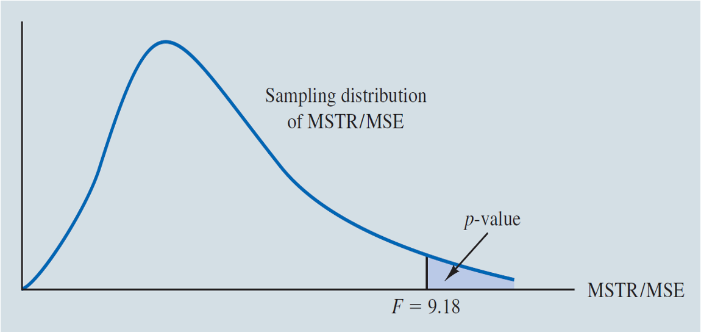
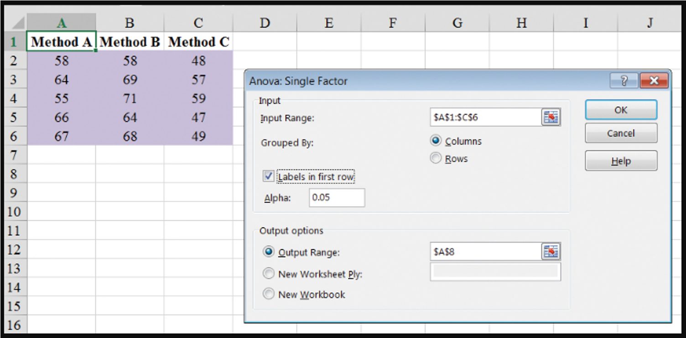

MGMT 30500: Business Statistics
Analysis of Variance (ANOVA)
Overview
- Introducion to Experimental Design
- Analysis of Variance (ANOVA)
Experimental Design
Experimental Design
- Statistical studies can be classified as being either experimental or observational.
- In an experimental study, the levels of one or more factors are controlled so that data can be obtained about how the factors influence the response variables of interest.
- Cause-and-effect relationships are easier to establish in experimental studies.
- Analysis of variance (ANOVA) can be used to analyze the data obtained from experimental studies.
- In an observational study, no attempt is made to control levels of the factors.
Experimental Design - Example: Chemitech Experiment
Chemitech developed a new filtration system for municipal water supplies. There are different methods that can be used to assemble the system.
Chemitech has narrowed down to three methods: A, B, and C and wants to determine which assembly method can produce the greatest mean number of filtration systems per week.
Experimental Design - Example: Chemitech Experiment
Randomization and Replications
For the purpose, the company randomly selected 15 workers and randomly divided them into 3 groups, and then randomly assigned one of the three treatments to each group 5 of the workers.
| Factor | Assembly method |
|---|---|
| Treatments/Levels/Values | A, B, and C |
| Response | Number of units produced |
| Experimental units | Employees |
Experimental Design - Example: Chemitech Experiment
Terminology
- A factor is a variable that the experimenter has selected for investigation.
- A treatment is a level (value) of a factor.
- Response or performance variable is a dependent/outcome variable affected by the factor.
- Experimental units are the objects of interest in the experiment.
- A completely randomized design is an experimental design in which the treatments are randomly assigned to the experimental units.
Experimental Design - Example: Chemitech Experiment
| Observation | A | B | C |
|---|---|---|---|
| 1 | 58 | 58 | 48 |
| 2 | 64 | 69 | 57 |
| 3 | 55 | 71 | 59 |
| 4 | 66 | 64 | 47 |
| 5 | 67 | 68 | 49 |
| Sample mean \(\bar{x}_j\) | 62 | 66 | 52 |
| Sample variance \(s_j^2\) | 27.5 | 26.5 | 31.0 |
| Sample standard deviation \(s_j\) | 5.244 | 5.148 | 5.568 |
Experimental Design - Example: Chemitech Experiment
- One-way Analysis of Variance (ANOVA) can be used to test for the equality of means (mean responses) of two or more normal populations.
The hypotheses:
\(H_0: \mu_1 = \mu_2 = \mu_3 = ... = \mu_k\)
\(H_a:\) Not all population means are equal.
where,
\((\mu_1, \mu_2, \mu_3, ..., \mu_k\) are mean responses for the \(k\) populations.)
\((k = 3\) for the motivating example.)
Experimental Design - Example: Chemitech Experiment
- If \(H_0\) is rejected, we cannot conclude that all population means are different.
- Rejecting \(H_0\) means that at least two population means have different values, or not all means are equal.
One-way ANOVA
One-way ANOVA: Model Assumptions
For each population:
The response variable is normally distributed.
The mean of \(i\)-th population is \(\mu_i\).
The variance of the response variable is the same for all of the populations; denoted \(\sigma^2\) (unknown).
The observations must be independent.
One-way ANOVA: Analysis Method
If the variation of the sample means is large, then not all population means are equal.
One-way ANOVA: Analysis Method
There are two types of variation:
Between-treatments variation of sample means (\(\bar{x}_j\)): Variation due to different treatments. (Explained variation)
Within-treatments variation of observations from their respective treatment means (Unexplained variation).
The F Test for \(H_0\) vs \(H_a\):
- If Between-treatments variation is significantly larger than the Within-treatment variation, reject \(H_0\).
One-way ANOVA: Explained Between-Treatments Variation (MSTR)
- The variation in the sample means is measured by the mean square due to treatments and is denoted by MSTR.
\[ \text{MSTR} = \frac{\text{Sum of squares due to treatments (SSTR)}}{\text{Degrees of freedom of SSTR}} = \frac{\sum_{j=1}^k n_j(\bar{x}_j - \bar{x})^2}{k - 1} \]
\[ = \frac{5(62 - 60)^2 + 5(66 - 60)^2 + 5(52 - 60)^2}{3 - 1} = \frac{520}{2} = 260 \]
One-way ANOVA: Unexplained Within-Treatments Variation (MSE)
The variation of the sample observations within each sample is called the mean square error (MSE).
A measure of sampling variation.
\[ \text{MSE} = \frac{\text{Sum of squares due to unexplained error (SSE)}}{\text{Degrees of freedom of SSE}} = \frac{\sum_{j=1}^k (n_j - 1) s_j^2}{n_T - k} \]
\[ = \frac{(5-1)(27.5) + (5-1)(26.5) + (5-1)(31)}{15-3} = \frac{340}{12} = 28.33 \]
\((n_T = 15 \text{ is the total sample size.})\)
One-way ANOVA: Test Statistic and Decision Rule
Test statistic:
- If MSTR is large, we will reject \(H_0\); but we need to take the sampling variation (MSE) into account.
- F statistic: \(F = \frac{MSTR}{MSE}\)
Decision rule:
- MSE is always a good estimate of the common population variance \(\sigma^2\).
- If \(H_0\) is false (not all means are equal), MSTR overestimates \(\sigma^2\) and is expected to be much larger than MSE.
- Reject \(H_0\) if \(F = \frac{MSTR}{MSE}\) is too large.
One-way ANOVA: The F Test
- The distribution of the test statistic:
\[ F = \frac{MSTR}{MSE} \]
- If the null hypothesis is true and the ANOVA assumptions are valid, the sampling distribution of the test statistic is an F distribution with \(k-1\) (numerator) and \(n_T - k\) (denominator) degrees of freedom.
- Decision Rule: Reject \(H_0\) if the observed \(F > F_{\alpha, k-1, n_T-k}\) (right-tail),
where \(F_{\alpha, k-1, n_T-k} = \text{F.INV}(1-\alpha, k-1, n_T-k)\).
One-way ANOVA: The F Test

- Observed F-ratio = 9.18
p-value = 1–F.DIST(9.18,2,12,TRUE)\(\approx\)0.004
One-way ANOVA: Decision Rules
- p-value approach: Reject \(H_0\) if \(p\)-value \(\leq \alpha\)
- Critical-value approach: Reject \(H_0\) if \(F \geq F_{\alpha}\)
where the critical value \(F_{\alpha}\) is based on an F distribution with \(k-1\) numerator d.f. and \(n_T - k\) denominator d.f.
- In our example, \(F_{0.05,2,12} = \text{F.inv}(0.95,2,12) = 3.89\), and \(9.18 > 3.89\).
Conclusion: We have statistically significant evidence that at least one pair of the assembly methods produced different mean numbers of filtration systems per week. The significance level is 5%.
One-way ANOVA: ANOVA Table
ANOVA can be viewed as the process of partitioning the total sum of squares and the degrees of freedom into their corresponding sources: treatments and error.
Dividing the sum of squares by the appropriate degrees of freedom provides the variance estimates, the \(F\) value, and the \(p\)-value used to test the hypothesis of equal population means.
One-way ANOVA: ANOVA Table
- Assuming \(H_0\) is true, the entire data set is basically one sample from one population, the formula for computing the total sum of squares (SST) is:
\[ \text{SST} = \sum_{j=1}^k \sum_{i=1}^{n_j} (x_{ij} - \bar{x})^2 = (n_T - 1) s_x^2 = 860 \]
\[ = \text{SSTR} + \text{SSE} = 520 + 340 \]
- SST has \(n_T - 1 = 15 - 1 = 14 (= 2 + 12)\) degrees of freedom.
One-way ANOVA: ANOVA Table
\(H_0: \mu_1 = \mu_2 = \mu_3\)
\(H_a:\) Not all the means are equal
| Source of Variation | Sum of Squares | Degrees of Freedom | Mean Square | \(F\) | p-Value |
|---|---|---|---|---|---|
| Treatments | \(SSTR\) | \(df_1\) | \(\text{MSTR}=\frac{\text{SSTR}}{df_1}\) | \(\frac{MSTR}{MSE}\) | \(1-\text{F.DIST}(F, k-1, n_T-k, \text{TRUE})\) |
| Error | \(SSE\) | \(df_2\) | \(\text{MSE}=\frac{\text{SSE}}{df_2}\) | ||
| Total | \(SST=SSTR+SSE\) | \(df_3=df_1+df_2\) |
One-way ANOVA: ANOVA Table
\(H_0: \mu_1 = \mu_2 = \mu_3\)
\(H_a:\) Not all the means are equal
| Source of Variation | Sum of Squares | Degrees of Freedom | Mean Square | \(F\) | p-Value |
|---|---|---|---|---|---|
| Treatments | \(\sum_{j=1}^k n_j (\bar{x}_j - \bar{x})^2\) | \(k - 1\) | \(\frac{\text{SSTR}}{k - 1}\) | \(\frac{\text{MSTR}}{\text{MSE}}\) | \(1-\text{F.DIST}(F, k-1, n_T-k, \text{TRUE})\) |
| Error | \(\sum_{j=1}^k (n_j - 1) s_j^2\) | \(n_T - k\) | \(\frac{\text{SSE}}{n_T - k}\) | ||
| Total | \(\sum_{j=1}^k \sum_{i=1}^{n_j} (x_{ij} - \bar{x})^2\) | \(n_T - 1\) |
One-way ANOVA: ANOVA Table
\(H_0: \mu_1 = \mu_2 = \mu_3\)
\(H_a:\) Not all the means are equal
| Source of Variation | Sum of Squares | Degrees of Freedom | Mean Square | \(F\) | p-Value |
|---|---|---|---|---|---|
| Treatments | 520 | 2 | 260.00 | 9.18 | .004 |
| Error | 340 | 12 | 28.33 | ||
| Total | 860 | 14 |
One-way ANOVA: Other Applications
- Mean sales of companies using four (4) different advertising methods (spot TV, newspapers, flyers, magazines).
- Mean quality levels of products from several vendors.
- Yields of several processes (machines).
- Mean completion times of different methods.
- Mean waiting times of several lines in a bank.
- Mean selling price of houses in different school districts.
- Mean response time of a service request for several companies.
- Mean ages between floor workers, middle managers, and executives.
- Mean improvement or learning outcome measures between several training/teaching methods (in-person, online, hybrid, weekend program).
Excel’s ANOVA
Excel’s ANOVA: Single Factor Tool
Step 1: Open
Assembly.xlsx, and,on Sheet 2, click the Data tab on the RibbonStep 2: In the Analysis group, click Data Analysis
Step 3: Choose Anova: Single Factor from the list of Analysis Tools
Step 4: When the Anova: Single Factor dialog box appears: (see details on next slide)
Excel’s ANOVA: Single Factor Tool

Excel’s ANOVA: Single Factor Tool
Summary and Output data

Summary
Summary
Some key takeaways from this session:
Experimental Design: allow for control over variables, enabling the establishment of cause-and-effect relationships.
- Observational studies do not control variables, limiting conclusions about causality.
ANOVA: Is a statistical method used to test for differences in means across multiple groups.
- It partitions the variance into components due to treatments and error, facilitating hypothesis testing.
ANOVA Assumptions and Decision Making:
- Assumptions include normal distribution, equal variances, and independence of observations.
- Decision rules are based on comparing the calculated F-statistic to a critical value or p-value to accept or reject the null hypothesis.